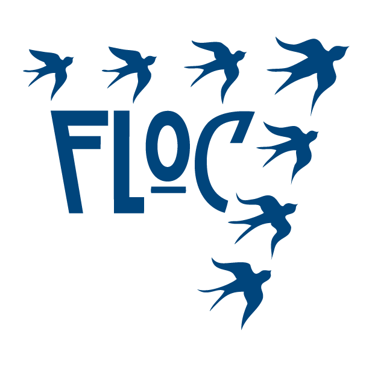

Member of FLOC-Freshman Leaders on Campus (FLOC) is a select organization for incoming freshmen,
founded at The University of Texas at Arlington in the fall of 2002. The mission of FLOC is to promote member involvement in student governance and community service, preparing students for active participation throughout their years at UTA.I was also the homecoming golf cart decoration co-chair. As the co-chair, I coordinated ideas and meet up timings between the members of FLOC for decorating the golf cart.
Member of Leadership Honors Program-A comprehensive leadership experience to be an ethical and global minded leader
Gems Our Own English High School, Dubai
Vice-President of School Council
House Prefect
Eco-Ambassador of Go-Green Club
Green Reporter of Eco club
Student journalist at Global Education and Skills Forum